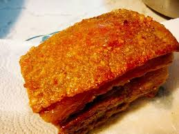

步驟1:將豬肉洗乾淨後用餐巾紙確實擦乾~取1個深盤或深鍋把豬肉皮朝上放入
倒水進去+5%的鹽 (水量的5%~淹到豬皮以下就可以~豬皮不要碰到水)~就可以送進去冰箱冷藏24小時了!
不需要包保鮮膜或蓋蓋子~讓豬皮可以在冰箱裡風乾~
步驟1:從冰箱取出豬肉把鹽水倒掉~一樣用餐巾紙把豬肉確實擦乾~再用鹽、五香粉、白胡椒粉
、黑胡椒粒、紅椒粉、米酒均勻的抹在豬肉上~豬皮不要抹唷!
步驟2:抹好之後~用保鮮膜確實的把豬肉有抹上醃料的部分包起來~只露出豬皮的部分!
一樣豬皮朝上放在盤子裡再送回冰箱冷藏48小時~讓豬皮可以在冰箱裡繼續風乾~
步驟1:把醃好+風乾的豬肉從冰箱取出~保鮮膜拿掉後醃料要不要刷掉都可以~
這時你會發現豬皮已經被風乾到非常硬的地步~刀都很難切下去~已經不會Q彈了!
敲它會有叩叩叩的聲音~拿起來打頭會很痛這樣 (誤!千萬不要拿起來打自己!)~
然後不需要回溫~烤箱也不需要預熱直接進烤箱烤30分鐘 (豬皮朝上放)~前15分鐘用180度烤~後15分鐘用200度烤

燒鴨
豆豉排骨
燒賣
心得報告